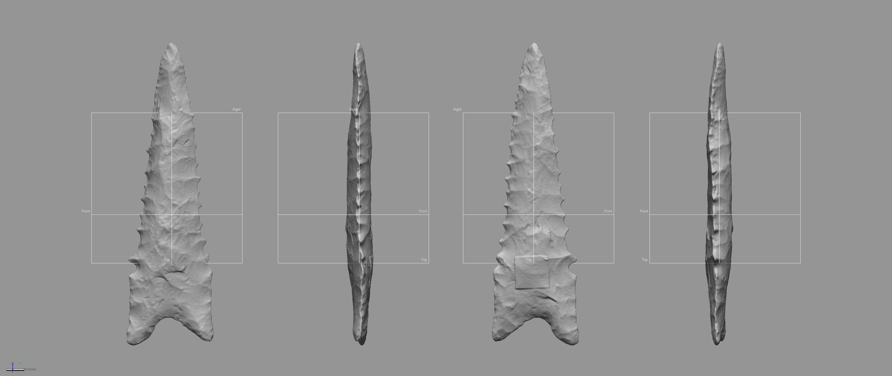

Chapter 1 Landmarking Protocol
This document includes supplemental materials for the article, “Article title here.” The landmarking protocol employed for this component of the study was initially developed for an analysis of Gahagan bifaces (Selden Jr., Dockall, and Dubied 2020). The goals of this study differ; however, the mechanics of the landmarking protocol are similar, and follow components of Dalton projectile morphology identified in previous studies (refs). Geomagic Design X (Build Version 2020.0.1 [Build Number: 43]) was used to generate a spline around the periphery of each biface, and to populate the landmarks and equidistant semilandmarks in a replicable manner using a suite of mathematically-defined criteria.

The goal of this effort was to increase both the precision and rigour of the study by including the z-dimension to capture morphological characteristics associated with axial twisting introduced through the practice of bifacial beveling. While true that some landmarking protocols can be—and often are—recycled as new specimens are added, this particular research programme endeavours to achieve ever-greater accuracy and precision in each analytical iteration.
This landmarking protocol was developed prior to running auto3dgm, and details the procedure for applying landmarks and equidistant semilandmarks; however, it may not reflect their actual placement on this specimen.
1.1 Generating the spline
Unlike the previous study, where the outline of each Gahagan biface was projected onto a 2D plane, this effort enlists a spline extracted from the surface geometry of the mesh using the extract contour curves command, which is used to detect and extract 3D contour curves from high-curvature areas of the mesh. In reverse-engineering, extract contour curves is regularly employed as the first step in building a patch network that is used to create a surface. The extracted feature curve is rendered as a spline, and follows the highest curvature contours around the periphery of the lateral and basal edges, following the highly variable sinuous edge morphology around the entirety of the biface. The remainder of the landmarking protocol is based upon this spline, which was subsequently split at four mathematically-defined locations.

1.2 Splitting the spline
A few definitions are warranted before proceeding. Reference geometries are used in the assistance of creating other features. These include basic geometric entities, such as planes, vectors, coordinates, points, and polygons. A reference point is a virtual point and is used to mark a specific position on a model or in 3D space. A reference plane is a virtual plane that has a normal direction and an infinite size. A reference plane is not a surface body, and is used to create other features.
The characteristic points and tangents developed for this landmarking protocol were inspired by the work of Birkhoff (1933), which has been gainfully employed within the context of both ceramic (Selden Jr. 2018a, 2018b, 2019, 2020) and lithic analyses (Selden Jr., Dockall, and Shafer 2018; Selden Jr., Dockall, and Dubied 2020). The first landmark (LM1) is placed at the horizontal tangent on the tip of each Dalton point. The second through fifth splits (LM2 - LM5) occur at points of highest curvature, and LM2 is always placed on the right side of the projectile when oriented in 3D space following the alignment output of auto3dgm. To place the final landmark (LM6), a linear measurement was used to project a reference point equidistant between LM2 and LM3. The location of that point was leveraged in placing the reference plane used to cut the spline at the location of LM6.
References
Birkhoff, George D. 1933. Aesthetic Measure. Cambridge: Harvard University Press.
Selden Jr., Robert Z. 2018a. “A Preliminary Study of Smithport Plain Bottle Morphology in the Southern Caddo Area.” Bulletin of the Texas Archeological Society 89: 63–89.
Selden Jr., Robert Z. 2018a. “A Preliminary Study of Smithport Plain Bottle Morphology in the Southern Caddo Area.” Bulletin of the Texas Archeological Society 89: 63–89.
2018b. “Ceramic Morphological Organisation in the Southern Caddo Area: Quiddity of Shape for Hickory Engraved Bottles.” Journal of Archaeological Science: Reports 21: 884–96. https://doi.org/10.1016/j.jasrep.2018.08.045.Selden Jr., Robert Z. 2018a. “A Preliminary Study of Smithport Plain Bottle Morphology in the Southern Caddo Area.” Bulletin of the Texas Archeological Society 89: 63–89.
2018b. “Ceramic Morphological Organisation in the Southern Caddo Area: Quiddity of Shape for Hickory Engraved Bottles.” Journal of Archaeological Science: Reports 21: 884–96. https://doi.org/10.1016/j.jasrep.2018.08.045. 2019. “Ceramic Morphological Organisation in the Southern Caddo Area: The Clarence H. Webb Collections.” Journal of Cultural Heritage 35: 41–55. https://doi.org/https://doi.org/10.1016/j.culher.2018.07.002.Selden Jr., Robert Z. 2018a. “A Preliminary Study of Smithport Plain Bottle Morphology in the Southern Caddo Area.” Bulletin of the Texas Archeological Society 89: 63–89.
2018b. “Ceramic Morphological Organisation in the Southern Caddo Area: Quiddity of Shape for Hickory Engraved Bottles.” Journal of Archaeological Science: Reports 21: 884–96. https://doi.org/10.1016/j.jasrep.2018.08.045. 2019. “Ceramic Morphological Organisation in the Southern Caddo Area: The Clarence H. Webb Collections.” Journal of Cultural Heritage 35: 41–55. https://doi.org/https://doi.org/10.1016/j.culher.2018.07.002. 2020. “Louisiana Limitrophe: An Iterative Morphological Exegesis of Caddo Bottle and Biface Production.” In Ancestral Caddo Ceramic Traditions, edited by Duncan P. McKinnon, Jeffrey S. Girard, and Timothy K. Perttula, (in press). Baton Rouge: LSU Press.Selden Jr., Robert Z., John E. Dockall, and Morgane Dubied. 2020. “A Quantitative Assessment of Intraspecific Morphological Variation in Gahagan Bifaces from the Southern Caddo Area and Central Texas.” Southeastern Archaeology 39 (2): 125–45. https://doi.org/10.1080/0734578x.2020.1744416.
Selden Jr., Robert Z., John E. Dockall, and Harry J. Shafer. 2018. “Lithic Morphological Organisation: Gahagan Bifaces from the Southern Caddo Area.” Digital Applications in Archaeology and Cultural Heritage 10: e00080. https://doi.org/10.1016/j.daach.2018.e00080.